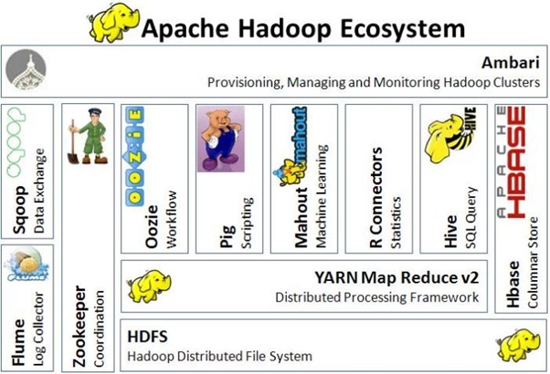
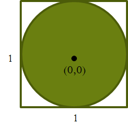
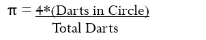
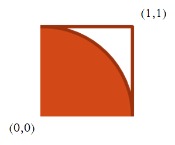
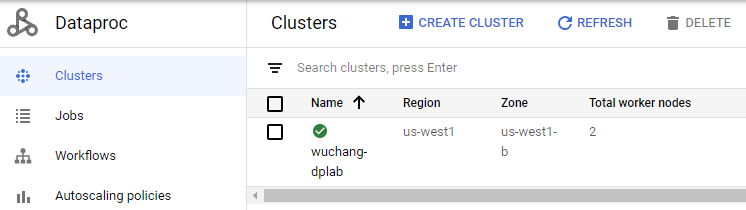
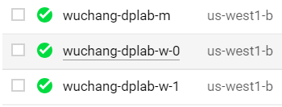
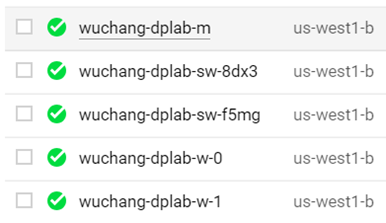

Cloud Dataproc provides a managed Apache Spark and Apache Hadoop service. Hadoop is a framework that allows for the distributed processing of large data sets across clusters of computers using simple programming models, most commonly via the Map-Reduce pattern. Cloud Dataproc obviates the need for users to configure and manage Hadoop itself. As shown by the figure below, this entails a significant number of software components.

We will use the gcloud CLI to deploy the resources for the lab.
In this lab, we'll be computing the value of π using massively parallel dart throwing. Workers will be tasked with randomly throwing darts at a unit circle (map) and the results will be collected (reduce) to determine the value of π.
Consider a square with sides of length 1 and area 1, centered around the origin of an x-y graph. A circle drawn within it will have diameter 1 and radius ½. The area of the circle will then be π*(½)2 or π/4.

When one randomly throws darts into the square, the ratio of the darts in the circle to the total number of darts thrown should be the ratio of the areas or π/4.
Solving for π, we then have the following formula:

If a dart is thrown, how do we determine if it falls in the circle? From geometry:
Our code for computing π will spawn 1000 dart-throwers in the map and collect dart counts in the reduce. The computation will be modified slightly to focus on the positive quadrant of the prior graph.

A Python version of the code is shown below. The function inside() randomly picks two values for x and y uniformly between 0 and 1 and checks whether the point resides within the unit circle (orange area).
def inside(p):
x, y = random.random(), random.random()
return x*x + y*y < 1To perform the computation, we use an Apache Spark context (sc) to parallelize NUM_SAMPLES dart throws, filter out those that fall inside the circle, then count their occurrences. The number is then plugged into the formula to output an estimate for π.
count = sc.parallelize(xrange(0, NUM_SAMPLES)).filter(inside).count()
print "Pi is roughly %f" % (4.0 * count / NUM_SAMPLES)Visit Cloud Shell and enable the API
gcloud services enable dataproc.googleapis.com
Set the default zone and region for Compute Engine and Dataproc.
gcloud config set compute/zone us-west1-b gcloud config set compute/region us-west1 gcloud config set dataproc/region us-west1
Set an environment variable (CLUSTERNAME) to <OdinID>-dplab that will be used to name our cluster of Compute Engine VMs for processing our Dataproc jobs.
CLUSTERNAME=${USER}-dplab
In this lab, machines will be brought up on the project's default network with only internal IP addresses. This private networking mode must be enabled
We'll first create a cluster with the tag "codelab" in us-west1-b with specific parameters for the controller and worker nodes:
gcloud dataproc clusters create ${CLUSTERNAME} \
--scopes=cloud-platform \
--tags codelab \
--region=us-west1 \
--zone=us-west1-b \
--no-address \
--network default \
--master-machine-type=e2-medium \
--worker-machine-type=e2-medium \
--master-boot-disk-size=30GB \
--worker-boot-disk-size=30GBView the cluster in the web console of Dataproc

View the nodes of the cluster in the web console of Compute Engine:

Note the current time, then submit the job, specifying 1000 workers. We'll run the Java version of the program that comes included in the Apache Spark distribution. For this computation, the program's stdout and stderr is sent to output.txt via the >& shell redirection syntax. In addition, the command is placed in the background with the & operator at the end.
date
gcloud dataproc jobs submit spark --cluster ${CLUSTERNAME} \
--class org.apache.spark.examples.SparkPi \
--jars file:///usr/lib/spark/examples/jars/spark-examples.jar -- 1000 \
>& output.txt &
After launching the job, you can list its status periodically and print the time via
gcloud dataproc jobs list --cluster ${CLUSTERNAME} ; date
When the computation completes, note the time.
For your lab notebook:
output.txt and show the estimate of π calculated.List the cluster to find the numInstances used for the master and the workers.
gcloud dataproc clusters describe ${CLUSTERNAME}
Allocate two additional pre-emptible machines to the cluster. Such machines are significantly cheaper, but can be reclaimed by Compute Engine if demand spikes.
gcloud dataproc clusters update ${CLUSTERNAME} --num-secondary-workers=2
Repeat the listing to see that they show up in the Config section.
gcloud dataproc clusters describe ${CLUSTERNAME}
Then, visit Compute Engine to see the new nodes in the cluster.

Note the current time, then submit the job again, redirecting the output to a different file output2.txt.
date
gcloud dataproc jobs submit spark --cluster ${CLUSTERNAME} \
--class org.apache.spark.examples.SparkPi \
--jars file:///usr/lib/spark/examples/jars/spark-examples.jar -- 1000 \
>& output2.txt &
List its status periodically and print the time:
gcloud dataproc jobs list --cluster ${CLUSTERNAME} ; date
When the computation completes, note the time.
Answer the following for your lab notebook:
output2.txt and show the estimate of π calculated.In Cloud Shell, delete the original cluster
gcloud dataproc clusters delete $CLUSTERNAME